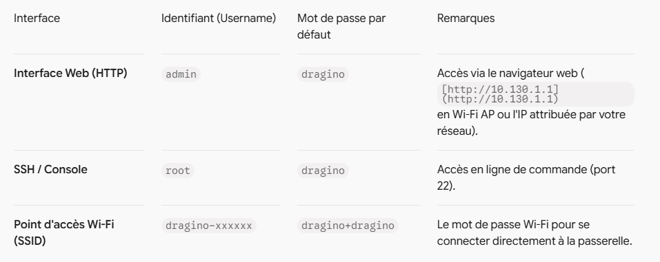

🎓 Consignes de Rendu — Compte-Rendu Numérique sous Google Classroom (Google Docs)
Toutes vos réponses (Q0.1 à Q4.3), vos tableaux (T1 à T6) et vos 8 captures d'écran (C1 à C8) sont à consigner directement dans le document Google Docs associé à votre devoir dans Google Classroom. Cliquez sur le bouton ci-dessous pour copier l'intégralité de la trame préformatée.
🏫 Mise en situation : surveillance thermique d'un local éloigné sur le campus du lycée
Le lycée s'étend sur plusieurs hectares. Les services techniques municipaux et scolaires souhaitent surveiller en continu la température d'un local technique distant (serre pédagogique, chaufferie, atelier de maintenance, gymnase) dépourvu de câblage réseau Ethernet, de couverture Wi-Fi exploitable et de prise d'alimentation permanente. Le système doit impérativement fonctionner sur batterie autonome pendant plusieurs mois.
Votre mission : Concevoir et déployer une chaîne LoRaWAN complète (capteur analogique → traitement embarqué Nano → émetteur radio LoRa-E5 → passerelle Dragino LPS8v3 → serveur réseau ChirpStack → supervision Node-RED & archivage CSV). Vous validerez ensuite par la mesure à l'Analog Discovery 3 les avantages technologiques (portée en champ réel, bilan énergétique, temps de trame) et identifierez ses limites d'application.
🎯 Référentiel BTS CIEL — Compétences et Savoirs Visés
C04 Analyser : Décoder la structure d'une trame binaire LoRaWAN, comparer les technologies de transmission sans fil IoT (débit, portée, consommation), justifier le compromis du facteur d'étalement (SF).
C05 Concevoir : Structurer la chaîne capteur → traitement → trame radio → serveur → supervision. Définir un format de charge utile compact et optimiser l'autonomie sur accumulateur.
C06 Valider : Mettre en œuvre le banc de test Digilent Analog Discovery 3 (AD3) : mesure du profil de courant d'émission, caractérisation des fenêtres de réception RX1/RX2, campagne de portée radio (RSSI, SNR, marge de liaison).
C07 Réaliser : Câbler la maquette sans court-circuit, programmer le microcontrôleur ATmega328P avec l'assistance d'une IA, déboguer les commandes AT du modem Wio-E5.
C09 Installer : Paramétrer une passerelle LPWAN (packet forwarder UDP 1700), déclarer un équipement OTAA sur le serveur de réseau (ChirpStack) et intégrer le flux de télémétrie dans Node-RED.
⚠️ Organisation de la salle & règles de sécurité radiofréquence
Une seule passerelle Dragino pour la classe : L'enseignant désigne un binôme rapporteur chargé de la configuration initiale de la passerelle. Les autres binômes travaillent en consultation seule sur l'interface et déclarent leur nœud sur le serveur réseau ChirpStack.
Jamais d'émission sans antenne : Vissez impérativement l'antenne hélicoïdale 868 MHz sur le connecteur SMA du module Grove LoRa-E5avant toute mise sous tension. L'absence d'antenne crée une onde stationnaire réfléchie susceptible de détruire irrémédiablement l'étage amplificateur de puissance (PA) du modem.
Réglementation européenne (Bande ISM 868 MHz) : La puissance d'émission est bridée à 14 dBm (25 mW) avec un taux d'occupation spectral (Duty-Cycle) ≤ 1 % sur les canaux par défaut (868,1 MHz, 868,3 MHz, 868,5 MHz). Une période d'émission minimale de 60 secondes est strictement imposée dans ce TP.
LoRa (Long Range) désigne la couche physique de modulation radio propriétaire à étalement de spectre (Chirp Spread Spectrum). LoRaWAN désigne le protocole de contrôle d'accès au médium (MAC) et de routage réseau situé au-dessus, normalisé par l'Alliance LoRa. Ensemble, ils constituent un réseau de type LPWAN (Low Power Wide Area Network), optimisé pour les petits volumes de données à longue portée.
0.1. Synthèse comparative des technologies de communication IoT
Critère Technique
Bluetooth LE
Wi-Fi (2,4 GHz)
Cellulaire 4G / LTE
LoRaWAN (868 MHz)
Portée typique
10 à 100 m
30 à 100 m
Plusieurs km (antennes relais)
2 à 5 km (ville), 10 à 15 km (rural)
Débit binaire
1 à 2 Mbit/s
10 à 600 Mbit/s
10 à 100 Mbit/s
0,3 à 5,5 kbit/s
Courant en émission
10 à 15 mA
100 à 300 mA
200 mA à 1 A
≈ 40 à 120 mA (Veille profonde : ≈ 2 μA)
Autonomie sur pile
Plusieurs mois
Quelques heures / jours
Quelques jours
Plusieurs mois à plusieurs années
Modèle d'infrastructure
Point à point / Mesh
Point d'accès privé
Opérateur (Carte SIM / Abonnement)
Réseau privé autonome (Passerelle sans abonnement)
En modulation LoRa, la durée d'un symbole binaire est définie par le facteur d'étalement SF7 à SF12 (correspondant aux débits DR5 à DR0 en région Europe EU868). Plus le SF est élevé, plus le récepteur est capable de discriminer un signal faible sous le plancher de bruit thermique (sensibilité et portée accrues), mais plus la trame met de temps à être émise (le débit s'effondre et l'énergie par message est multipliée).
Débit LoRaWAN
Facteur (Bande 125 kHz)
Débit utile
Sensibilité récepteur
Durée de trame (18 octets)
Intervalle mini (Duty-Cycle 1 %)
DR5
SF7
5,5 kbit/s
≈ −123 dBm
51,5 ms
5,2 s
DR4
SF8
3,1 kbit/s
≈ −126 dBm
92,7 ms
9,3 s
DR3
SF9
1,8 kbit/s
≈ −129 dBm
185 ms
18,5 s
DR2
SF10
0,98 kbit/s
≈ −132 dBm
330 ms
33 s
DR1
SF11
0,54 kbit/s
≈ −134,5 dBm
660 ms
66 s
DR0
SF12
0,29 kbit/s
≈ −137 dBm
1 319 ms
132 s
Figure 3 : Durée d'émission d'une trame LoRaWAN de 18 octets (5 octets utiles + 13 octets de surcharge MAC/sécurité) pour chaque facteur d'étalement
Google Docs — Étude Q0.1 & Q0.2Justification du choix technologique et compromis SF :
Q0.1 — Choix pour la mise en situation : À l'aide du tableau 0.1, justifiez en quelques lignes pourquoi LoRaWAN est la solution technique la plus pertinente par rapport au Wi-Fi, au Bluetooth LE et à la 4G pour le local isolé du lycée. Argumentez sur au moins 3 critères chiffrés et explicitez un inconvénient majeur que le service technique devra accepter.
Q0.2 — Lecture de la Figure 3 : Par combien est multipliée la durée d'émission lorsqu'on passe de SF7 à SF12 ? Quel gain de sensibilité (en dB) obtient-on en contrepartie ? Pourquoi un nœud qui émet en SF12 épuise-t-il plus rapidement sa batterie, et quelle contrainte cela impose-t-il sur l'intervalle minimal d'émission réglementaire (Duty-Cycle de 1 %) ?
PARTIE 1 : Paramétrage de la Passerelle Dragino LPS8v3 & Serveur ChirpStack⏱ Durée : 0h35
🔧 Fiche technique : Rôle d'une passerelle LoRaWAN transparente
La passerelle radio est un relais transparent (bridge) : elle écoute simultanément plusieurs canaux (8 canaux en EU868) sur différents facteurs d'étalement, puis encapsule chaque trame radio reçue dans des paquets UDP/IP (protocole « Semtech packet forwarder » sur le port 1700) à destination du serveur de réseau.
Elle ne déchiffre pas le contenu applicatif : les données sont sécurisées de bout en bout en AES-128 entre le nœud capteur et le serveur de réseau. La passerelle y adjoint uniquement les métadonnées de réception (RSSI, SNR, horodatage UTC, fréquence du canal).
La liaison amont vers le serveur s'effectue indifféremment par Ethernet filaire, Wi-Fi ou réseau Cellulaire 4G (module EC25).
1.1. Accès à l'interface d'administration et identification

Paramètres et identifiants par défaut pour accéder à la passerelle Dragino (Web HTTP admin/dragino via http://10.130.1.1 ou IP locale, SSH root/dragino, Wi-Fi AP dragino-xxxxxx / dragino+dragino)
Mettre sous tension la passerelle Dragino LPS8v3 et observer la LED SYS : attendre qu'elle devienne bleue fixe (environ 2 minutes). Diagnostic : bleue clignotante = réseau IP accessible mais serveur ChirpStack injoignable.
Connecter le PC au réseau local du lycée ou au point d'accès Wi-Fi de maintenance de la passerelle (SSID dragino-xxxxxx, mot de passe dragino+dragino). Ouvrir un navigateur web à l'adresse IP de la passerelle (ou http://10.130.1.1 en accès direct Wi-Fi AP) et vous identifier (utilisateur admin, mot de passe dragino).
Dans le menu Status → System Overview, relever l'identifiant unique Gateway EUI (identifiant IEEE EUI-64 codé sur 16 caractères hexadécimaux).
1.2. Configuration du transfert de trames et plan de fréquences
Enregistrer et appliquer les modifications (Save & Apply). Ouvrir le menu LoRa Log pour visualiser en direct le journal des réceptions radio du concentrateur.
Accéder à la console web du serveur ChirpStack v4 (port 8080). Dans le menu Gateways, localiser la passerelle : contrôler que le statut Last seen s'actualise toutes les quelques secondes.
📸 Captures C1 & C2 à insérer dans votre compte-rendu :
• Capture C1 (Passerelle Dragino) : Page System Overview montrant le Gateway EUI et page LoRaWAN Settings affichant le serveur UDP 1700.
• Capture C2 (Console ChirpStack) : Menu Gateways montrant la passerelle active avec un horodatage Last seen récent.
Google Docs — Tableau T1 & Étude Q1Relevés et questions sur la passerelle Dragino :
Paramètre d'exploitation
Valeur relevée
Gateway EUI
................................................
Liaison amont vers le réseau (Ethernet / Wi-Fi / 4G)
................................................
Adresse IP du serveur de réseau & port UDP
................................................
Plan de fréquences (Région & canaux de base)
................................................
Mode LoRaWAN (Public / Privé)
................................................
Q1.1 — La passerelle Dragino LPS8v3 est-elle capable de lire directement la température émise par le capteur ? Justifiez votre réponse et explicitez la notion de passerelle « transparente ».
Q1.2 — Pourquoi le protocole de transport UDP est-il systématiquement privilégié par rapport à TCP pour la liaison passerelle → serveur de réseau ? Quelles informations métrologiques essentielles la passerelle greffe-t-elle à chaque trame reçue ?
Q1.3 — En cas d'inactivité de la passerelle dans la console ChirpStack (statut Never seen), listez de façon ordonnée les 3 étapes de diagnostic matériel et réseau à exécuter pour identifier la panne.
PARTIE 2 : Réalisation du Nœud Capteur (Arduino Nano + Grove LoRa-E5) & Télémétrie⏱ Durée : 0h50
2.1. Câblage matériel du nœud capteur
Enficher l'Arduino Nano v3 sur sa platine support Grove (vérifier le sens d'insertion des broches et que le sélecteur d'alimentation est réglé sur 5V).
Raccorder le modem Grove LoRa-E5 sur le connecteur Grove D2 (broches D2=RX Nano ← TX modem, D3=TX Nano → RX modem). Visser l'antenne 868 MHz.
Raccorder le capteur de température Grove v1.2 sur le port Grove analogique A0.
Relier le câble Mini-USB du Nano au PC de développement.
Figure 2 : Schéma de câblage complet — Nœud capteur autonome et raccordement du shunt de mesure 1,1 Ω vers l'Analog Discovery 3
2.2. Étape 1 : Le Pont Série AT (Configuration & Audit du Modem)
Le modem Grove LoRa-E5 embarque un microcontrôleur STM32WLE5JC piloté par des commandes AT en liaison série asynchrone à 9600 bauds. Pour auditer le modem et extraire ses identifiants uniques sans bibliothèque logicielle, l'Arduino Nano doit opérer en passerelle MultiSerial bidirectionnelle.
🤖 Pistes de recherche & Co-développement IA — Le Pont Série AT MultiSerial
Cahier des charges logiciel : Développer un sketch Arduino établissant un pont transparent non-bloquant entre la console USB du PC (Serial à 9600 bauds) et le modem LoRa-E5 émulé sur un port série logiciel (SoftwareSerial sur D2=RX, D3=TX à 9600 bauds).
Suggestion de prompt pour votre assistant IA : « Pour une carte Arduino Nano v3 (microcontrôleur ATmega328P), écris un programme en C++ Arduino créant un pont série bidirectionnel transparent :
1. La liaison USB matérielle Serial est initialisée à 9600 bauds.
2. Une liaison série logicielle SoftwareSerial (baptisée loraSerial) est configurée à 9600 bauds sur la broche D2 (RX du Nano, reliée au TX du module) et la broche D3 (TX du Nano, reliée au RX du module).
3. Dans loop(), redirige de manière instantanée et non-bloquante tous les caractères reçus de Serial vers loraSerial, et inversement tous les caractères de loraSerial vers Serial.
4. Optimise les échanges sans delay() pour ne saturer aucun tampon de réception. »
Esprit critique & Validation : Analysez le code fourni par l'IA. Quel réglage de terminateur de ligne (Line ending) dans le moniteur série de l'Arduino IDE est exigé par le firmware du modem LoRa-E5 pour valider une commande ? (Indice : le modem attend les deux caractères \r\n). Vérifiez le pont en envoyant AT : le modem doit répondre immédiatement +AT: OK.
📄 Structure architecturale du Pont Série (À compléter avec l'IA)
#include <SoftwareSerial.h>
const uint8_t LORA_RX_PIN = 2; // Nano RX <- LoRa TX
const uint8_t LORA_TX_PIN = 3; // Nano TX -> LoRa RX
SoftwareSerial loraSerial(LORA_RX_PIN, LORA_TX_PIN);
void setup() {
Serial.begin(9600);
while (!Serial);
loraSerial.begin(9600);
Serial.println(F("Pont Serie AT initialise. Vitesse : 9600 bauds (Both NL & CR)"));
}
void loop() {
// TODO : Redirection transparente bidirectionnelle Serial <-> loraSerial
// A completer a l'aide de l'assistant IA
}
Une fois le pont téléversé, ouvrez le Moniteur Série (9600 bauds, terminateur « NL et CR » / Both NL & CR). Exécutez les commandes AT suivantes et consignez les retours :
Google Docs — Tableau T2 & Étude Q2.1Exploration des commandes AT du modem Wio-E5 :
Commande AT exécutée
Réponse brute du modem
Rôle fonctionnel de la commande
AT
..............................
..............................................
AT+VER
..............................
..............................................
AT+ID
..............................
..............................................
AT+DR
..............................
..............................................
AT+CH
..............................
..............................................
Q2.1 — Dans la réponse de AT+ID, identifiez l'identifiant matériel unique au monde gravé en usine dans votre modem (le DevEUI sur 64 bits = 16 caractères hexadécimaux). Notez-le soigneusement et expliquez son utilité lors de l'authentification réseau.
2.3. Déclaration de l'équipement dans le serveur ChirpStack v4
Dans l'interface web de ChirpStack : Applications → lycee-lora → Add device.
Compléter les champs : Name = identifiant de votre binôme (ex. groupe-1), Device EUI = le DevEui relevé avec la commande AT+ID, Device profile = EU868 - LoRaWAN 1.0.3 OTAA. Valider.
Dans l'onglet OTAA keys, saisir la clé Application key (AppKey) remise par l'enseignant (32 caractères hexadécimaux représentant un secret partagé de 128 bits).
2.4. Étape 2 : Firmware du Nœud Autonome & Encodage de Télémétrie Binaire
Le nœud capteur autonome doit réaliser l'acquisition périodique de son environnement, mesurer l'état de charge de sa batterie, compacter ces informations sous forme binaire et transmettre la charge utile au serveur en respectant la fenêtre légale d'émission.
Cahier des charges de la trame binaire (5 octets) :
Octets
Grandeur mesurée
Format binaire & Représentation
Exemple décimal → Hexadécimal
0 – 1
Température ambiante
Entier signé 16 bits (int16_t) en dixièmes de °C, Big-Endian (MSB first)
+24,5 °C → 245 → 0x00F5 −2,0 °C → −20 → 0xFFEC
2 – 3
Tension Vcc d'alimentation
Entier non signé 16 bits (uint16_t) en millivolts (mV), Big-Endian (MSB first)
4 980 mV (4,98 V) → 0x1374
4
Compteur de trames
Entier non signé 8 bits (uint8_t), incrémenté à chaque message (0 à 255)
Trame n° 7 → 0x07
🤖 Pistes de recherche & Co-développement IA — Firmware Autonome & Encodage Binaire
Cahier des charges logiciel : Développer le programme autonome en C++ Arduino pour ATmega328P assurant la lecture de la thermistance CTN Grove sur A0 (relation de Steinhart-Hart B=4275), la mesure interne de la tension Vcc (bandgap 1,1 V sans pont diviseur externe), le formatage hexadécimal de la trame de 5 octets, la configuration OTAA et l'émission cadencée toutes les 60 secondes.
Formule physique de conversion thermistance (Grove v1.2) :
1. Résistance de la thermistance : R = 100 000 × (1023 / ADC − 1).
2. Équation de Steinhart-Hart simplifiée : 1 / T = 1 / T0 + (1 / B) × ln(R / R0) avec T0 = 298,15 K (25 °C) et B = 4275. La température en degrés Celsius s'obtient par : T(°C) = T(K) − 273,15.
Suggestion de prompt pour votre assistant IA : « Pour un microcontrôleur ATmega328P (Arduino Nano v3 à 16 MHz, 5V TTL) équipé d'un modem Grove LoRa-E5 (SoftwareSerial sur D2=RX, D3=TX à 9600 bauds) et d'une thermistance analogique Grove v1.2 sur A0 :
Écris un programme C++ Arduino complet et modulaire qui :
1) Configure le modem LoRa-E5 en mode LoRaWAN OTAA, région EU868, classe A, et programme la clé APPKEY fournie.
2) Réalise la procédure d'association réseau avec la commande AT+JOIN (avec timeout de 25s et 3 tentatives).
3) Développe une fonction calculant la température en dixièmes de °C (int16_t) via l'équation de la thermistance B=4275 (R0=100k).
4) Développe une fonction lisant la tension d'alimentation Vcc en mV (uint16_t) en interrogeant la référence de tension interne 1.1V (registre ADMUX de l'ATmega328P).
5) Formate ces grandeurs sur 5 octets binaires compacts représentés sous forme d'une chaîne hexadécimale de 10 caractères (format: [Temp 2 octets signés MSB][Vcc 2 octets non signés MSB][Compteur 1 octet]).
6) Transmet la trame au modem avec la commande AT+MSGHEX="<payload>" et contrôle la réponse "+MSGHEX: Done".
7) Applique une temporisation de 60 secondes entre chaque émission pour respecter le Duty-Cycle européen de 1%.
Utilise la macro F() pour stocker les chaînes littérales en mémoire Flash. »
Esprit critique & Validation : Pourquoi la transmission sous forme d'octets binaires encodés en hexadécimal (5 octets) est-elle infiniment supérieure à l'envoi d'une chaîne de texte ASCII en clair (ex: "24.5;4980;7" = 11 caractères) sur un réseau LPWAN ? Comment le compilateur C++ code-t-il les températures négatives en complément à deux (testez avec −2,0 °C : quelle valeur hexadécimale obtient-on) ?
📄 Structure du sketch autonome LoRaWAN (À co-développer avec l'IA)
#include <SoftwareSerial.h>
const uint8_t LORA_RX_PIN = 2;
const uint8_t LORA_TX_PIN = 3;
SoftwareSerial lora(LORA_RX_PIN, LORA_TX_PIN);
const uint8_t TEMP_PIN = A0;
const int B_COEFFICIENT = 4275;
const long R0 = 100000;
// TODO : Renseigner votre AppKey personnelle distribuée par l'enseignant
const char APPKEY[] = "VOTRE_APPKEY_32_HEX";
uint8_t packetCounter = 0;
// Envoi d'une commande AT avec verification de la reponse attendue
bool sendATCommand(const char* cmd, const char* expectedResponse, unsigned long timeoutMs = 5000) {
// A completer avec l'assistant IA
}
// Mesure de la tension interne Vcc via la reference 1.1V
uint16_t readVccMillivolts() {
// A completer avec l'assistant IA
}
// Conversion de la temperature du capteur Grove (deg C x 10)
int16_t readTemperatureDecicelsius() {
// A completer avec l'assistant IA
}
void setup() {
Serial.begin(9600);
lora.begin(9600);
// Séquence d'initialisation AT : MODE, DR, CLASS, KEY, JOIN
}
void loop() {
// Mesures, formatage hexadécimal 5 octets et transmission AT+MSGHEX
// Temporisation de 60s (Duty-Cycle)
}
Compléter le programme avec votre assistant IA en intégrant votre AppKey, téléverser sur le Nano et ouvrir le moniteur série (9600 bauds).
Observer la séquence d'authentification : +JOIN: Start → +JOIN: Network joined → +MSGHEX: ... Done.
Dans la console ChirpStack, ouvrir votre équipement : examiner l'onglet Events (messages up) et l'onglet LoRaWAN frames. Ouvrir un événement up et relever la charge utile en data (Base64) ainsi que les indicateurs de qualité radio rssi et snr.
📸 Captures C3 & C4 à insérer dans votre compte-rendu :
• Capture C3 (Moniteur série Arduino) : Séquence de Join OTAA réussie (Network joined) suivie de l'émission d'une trame (+MSGHEX: ... Done).
• Capture C4 (Console ChirpStack) : Événement up montrant la charge data en Base64, la fréquence, le Spreading Factor, le rssi et le snr.
Google Docs — Tableau T3 & Étude Q2.2Relevé de première transmission LoRaWAN :
Indicateur d'exploitation
Valeur observée
Délai écoulé entre la commande AT+JOIN et l'acquittement Network joined
......................... s
Champ data (Base64) reçu dans ChirpStack et sa conversion en 5 octets hexadécimaux
..............................................
Fréquence radio du canal employé (868,1 / 868,3 / 868,5 MHz ?)
......................... MHz
Facteur d'étalement (SF) et Data Rate (DR) affectés
..............................................
Indicateurs de niveau radio relevés par la passerelle (RSSI / SNR)
......................... dBm / ......................... dB
Q2.2 — Décodage manuel d'une trame de télémétrie : Une trame radio capturée par ChirpStack contient la charge utile hexadécimale brute suivante : 00 F5 13 8A 07.
Décodez chaque champ en décimal et donnez la température (°C), la tension Vcc (mV) et le numéro de séquence de la trame.
Question défi : Si le capteur est placé dans un congélateur et que les deux premiers octets valent FF EC, quelle est la température en °C ? Détaillez le calcul en complément à deux.
Q2.3 — Efficacité spectrale : Le même message transmis sous forme de texte ASCII brut ("24.5;5.00;7") occuperait 11 octets de charge utile au lieu de 5. Calculez l'impact direct de ce surplus d'octets sur la durée d'occupation spectrale (Time-on-Air), le respect du Duty-Cycle et l'énergie prélevée sur la batterie.
PARTIE 3 : Supervision sous Node-RED, Décodage Base64 & Stockage CSV⏱ Durée : 0h30
Le serveur ChirpStack publie chaque trame validée sur un broker MQTT au format JSON sur le sujet application/lycee-lora/device/+/event/up. Le superviseur Node-RED s'abonne à ce flux, décode la chaîne Base64 en variables physiques, actualise un tableau de bord graphique (Dashboard) et archive les mesures dans un fichier CSV horodaté.
3.1. Architecture du flux et traitement des données
🤖 Pistes de recherche & Co-développement IA — Décodage Base64 & Flux Node-RED
Cahier des charges du traitement : Concevoir la fonction JavaScript d'un nœud function Node-RED qui intercepte le message JSON MQTT émis par ChirpStack v4, convertit la charge utile Base64 (msg.payload.data) en un tableau d'octets Buffer, désérialise les 5 octets en respectant le format Big-Endian, extrait les métadonnées radio (RSSI, SNR, SF, DevEUI, Nom) et prépare une ligne de texte formatée pour l'exportation CSV.
Suggestion de prompt pour votre assistant IA : « Dans Node-RED, écris le code JavaScript d'un nœud "function" qui traite un message JSON reçu depuis un broker MQTT ChirpStack v4 :
1. Vérifie la présence de msg.payload.data (chaîne Base64).
2. Convertit cette chaîne en un objet Buffer Node.js et vérifie qu'il contient au moins 5 octets.
3. Désérialise les champs en respectant l'endianness Big-Endian :
- Octets 0-1 : Température signée (readInt16BE) divisée par 10.0 (en °C).
- Octets 2-3 : Tension Vcc non signée (readUInt16BE) divisée par 1000.0 (en V).
- Octet 4 : Numéro de séquence de trame (readUInt8).
4. Extrait les métadonnées de la trame : le DevEUI, le deviceName, le RSSI et le SNR du premier récepteur (rxInfo[0]), et le Spreading Factor (txInfo).
5. Prépare un objet structuré pour les jauges du Dashboard, et génère une chaîne formatée pour fichier CSV : "Horodatage;DevEUI;Nom;Compteur;Temperature_C;Vcc_V;RSSI_dBm;SNR_dB;SF\n".
Prévois une gestion robuste des erreurs pour éviter tout crash de Node-RED si un paquet est corrompu. »
Esprit critique & Validation : Pourquoi les serveurs IoT comme ChirpStack encodent-ils les charges binaires en Base64 dans les messages JSON ? Quelle méthode du Buffer de Node.js garantit la prise en compte du signe pour les températures négatives (readInt16BE vs readUInt16BE) ?
📄 Fonction JavaScript de décodage Node-RED (Issue du co-développement IA)
let pl = msg.payload;
if (typeof pl === 'string') {
try { pl = JSON.parse(pl); } catch(e) { return null; }
}
if (!pl || !pl.data) return null;
// Décodage de la charge utile binaire Base64 vers un Buffer Node.js
const buf = Buffer.from(pl.data, 'base64');
if (buf.length < 5) return null;
// Extraction des 5 octets en Big-Endian
const tempDeci = buf.readInt16BE(0);
const vccMilli = buf.readUInt16BE(2);
const counter = buf.readUInt8(4);
// Extraction des métadonnées réseau ChirpStack
const devEui = (pl.deviceInfo && pl.deviceInfo.devEui) ? pl.deviceInfo.devEui : (pl.devEui || 'Inconnu');
const devName = (pl.deviceInfo && pl.deviceInfo.deviceName) ? pl.deviceInfo.deviceName : 'Nano-E5';
let rssi = -120;
let snr = 0;
if (pl.rxInfo && pl.rxInfo.length > 0) {
rssi = pl.rxInfo[0].rssi;
snr = pl.rxInfo[0].snr;
}
let sf = 7;
if (pl.txInfo && pl.txInfo.modulation && pl.txInfo.modulation.lora) {
sf = pl.txInfo.modulation.lora.spreadingFactor;
}
const decoded = {
timestamp: new Date().toISOString(),
devEui: devEui,
devName: devName,
counter: counter,
temperature: Number((tempDeci / 10.0).toFixed(1)),
vcc: Number((vccMilli / 1000.0).toFixed(3)),
rssi: rssi,
snr: snr,
sf: sf
};
// Sortie 1 : Objet pour Dashboard | Sortie 2 : Ligne formatee CSV
msg.payload = decoded;
msg.csvLine = `${decoded.timestamp};${decoded.devEui};${decoded.devName};${decoded.counter};${decoded.temperature};${decoded.vcc};${decoded.rssi};${decoded.snr};SF${decoded.sf}\n`;
return msg;
3.2. Déploiement du flux Node-RED et archivage CSV
Démarrer Node-RED (ouvrir http://localhost:1880). Installer la palette node-red-dashboard si nécessaire.
Créer ou importer le flux de supervision : configurer le nœud MQTT In sur l'adresse du serveur ChirpStack (port 1883) et écouter le topic application/lycee-lora/device/+/event/up.
Relier le nœud Function de décodage vers un nœud File Out configuré pour ajouter les données (Append to file) dans C:/LoRa/mesures_lora.csv.
Déployer le flux. Ouvrir le tableau de bord à l'adresse http://localhost:1880/ui et vérifier l'affichage en direct des jauges de température, de tension de batterie et des indicateurs radio RSSI/SNR.
Attendre l'arrivée d'au moins 5 trames d'émission consécutives, puis ouvrir le fichier C:/LoRa/mesures_lora.csv dans un tableur ou un éditeur de texte.
📸 Captures C5 & C6 à insérer dans votre compte-rendu :
• Capture C5 (Dashboard Node-RED) : Vue de l'interface /ui affichant les courbes de température, la jauge de tension Vcc et les graphes de niveau RSSI/SNR.
• Capture C6 (Fichier CSV) : Fichier mesures_lora.csv ouvert montrant au moins 5 lignes d'enregistrements horodatés conformes.
Google Docs — Tableau T4 & Étude Q3Analyse structurelle de la chaîne de transmission :
Liaison (selon Figure 1)
Support physique & Protocole de communication
Nature de l'information transportée
① Capteur → ② Nano
..................................
..................................
② Nano → ③ LoRa-E5
..................................
..................................
③ LoRa-E5 → ④ Dragino
..................................
..................................
④ Dragino → ⑤ ChirpStack
..................................
..................................
⑤ ChirpStack → ⑥ Node-RED
..................................
..................................
Q3.1 — À quelle étape précise de la chaîne le format Base64 est-il converti en grandeurs physiques compréhensibles par l'utilisateur ? Pourquoi le serveur de réseau ChirpStack ne réalise-t-il pas automatiquement cette conversion sans adjonction d'un décodeur spécifique ?
Q3.2 — Quel intérêt majeur présente l'archivage simultané des métadonnées RSSI, SNR et de la tension de batterie Vcc aux côtés de la température pour le service technique chargé de la maintenance prédictive du site ?
PARTIE 4 : Campagne de Mesures — Portée Campus & Métrologie Énergétique AD3⏱ Durée : 0h30
4.1. Mesures de portée radiofréquence en environnement réel (« Marche Test »)
Déconnecter le câble USB de programmation du PC et alimenter le nœud capteur exclusivement par la Powerbank autonome 5V. Le PC de supervision reste en salle de cours connecté au tableau de bord Node-RED. Un membre du binôme emporte le nœud autonome sur le campus.
Se positionner successivement en 3 points stratégiques de plus en plus distants de la passerelle :
Point A : En salle de travaux pratiques (ligne de vue directe, courte distance ≈ 10 à 30 m).
Point B : Dans un bâtiment adjacent ou un couloir traversant (atténuation par les cloisons ≈ 100 à 250 m).
Point C : À l'extérieur ou au point le plus reculé autorisé du campus (> 350 m).
Pour chaque emplacement, patienter pendant l'émission d'au moins 3 trames successives (3 minutes). Noter les valeurs moyennes de RSSI et SNR.
(Pour SF7 : Sensibilité = −123 dBm. Plus la marge est positive et supérieure à 10 dB, plus la communication est immune aux perturbations).
Google Docs — Tableau T5Campagne de portée radiofréquence sur le campus (Facteur SF utilisé : ........ ) :
Point de mesure
Distance estimée à la passerelle
Trames reçues / émises
RSSI moyen (dBm)
SNR moyen (dB)
Marge de liaison calculée (dB)
A — Salle de TP
........ m
... / 3
........ dBm
........ dB
........ dB
B — Autre bâtiment
........ m
... / 3
........ dBm
........ dB
........ dB
C — Point éloigné campus
........ m
... / 3
........ dBm
........ dB
........ dB
4.2. Caractérisation de la consommation et du profil temporel à l'Analog Discovery 3
L'autonomie d'un capteur IoT repose sur l'alternance entre de longues phases de repos et de brèves impulsions d'émission radio. Vous allez mesurer la durée effective de l'impulsion et l'énergie appelée.
Hors tension, insérer le shunt de précision de 1,1 Ω en série sur le fil d'alimentation +5V entre la Powerbank et l'entrée USB de l'Arduino Nano (voir schéma Figure 2).
Raccorder les sondes différentielles de l'Oscilloscope Voie 1 de l'AD3 :
Voie 1+ (Fil Orange) reliée en amont du shunt (côté Powerbank 5V).
Voie 1− (Fil Orange/Blanc) reliée en aval du shunt (côté entrée Nano).
Attention : La mesure étant différentielle, ne raccordez pas la pointe 1− à la masse GND !
Dans WaveForms Scope :
Calibre vertical : 20 mV/div, base de temps : 200 ms/div.
Déclenchement (Trigger) : Mode Single sur front montant à 40 mV.
La conversion tension/courant s'applique selon la loi d'Ohm : I = U / 1,1 Ω (une chute de tension de 110 mV correspond à un appel de courant de 100 mA).
Déclencher une émission en DR5 / SF7 : Relever le courant de veille (Iveille), le courant crête d'émission (ITX) et mesurer avec les curseurs temporels la durée d'émission exacte de la trame radio.
Repérer les deux fenêtres d'écoute de réception descendantes normalisées LoRaWAN Classe A : RX1 (exactement 1 seconde après la fin de transmission) et RX2 (exactement 2 secondes après la fin de transmission).
Mesure comparative en SF12 : Modifier la commande dans le programme pour passer en AT+DR=DR0 (ou AT+DR=0), régler la base de temps du scope sur 500 ms/div et relever la nouvelle durée d'émission en SF12.
📸 Captures C7 & C8 à insérer dans votre compte-rendu :
• Capture C7 (WaveForms Scope en SF7 / DR5) : Chronogramme du courant d'émission avec curseurs de mesure de durée et mise en évidence des fenêtres RX1/RX2.
• Capture C8 (WaveForms Scope en SF12 / DR0) : Chronogramme comparatif montrant l'étalement temporel de l'impulsion en SF12.
Google Docs — Tableau T6 & Étude Q4Profil de consommation, durée d'émission et autonomie :
Configuration radio
Iveille mesuré (mA)
ITX crête mesuré (mA)
Durée d'émission mesurée (ms)
Durée théorique (Fig. 3)
Écart relatif (%)
DR5 / SF7
........ mA
........ mA
........ ms
51,5 ms
........ %
DR0 / SF12
........ mA
........ mA
........ ms
1 319 ms
........ %
Q4.1 — Métrologie & Incertitudes : Citez au moins deux causes physiques d'incertitude expliquant l'écart observé entre la durée d'émission mesurée aux curseurs et la valeur théorique calculée (tolérance de la résistance de shunt de 1,1 Ω, temps de commutation de l'oscillateur local, résolution d'échantillonnage de l'AD3).
Q4.2 — Évaluation de l'autonomie sur batterie : Soit une Powerbank de capacité nominale C = ........ mAh dont 70 % de l'énergie est utilement restituable (rendement du convertisseur boost interne).
Calculez le courant moyen consommé et l'autonomie théorique résultante en SF7 puis en SF12 pour une cadence d'une trame par minute.
Quelle part du courant moyen global est imputable à l'émetteur radio ? Quel élément électronique de la maquette consomme l'essentiel du courant en veille (Iveille), et quel mode d'économie d'énergie (déjà étudié sur microcontrôleur) permettrait d'atteindre plusieurs années d'autonomie ?
Q4.3 — Bilan critique de synthèse : En vous fondant sur l'ensemble de vos mesures expérimentales, synthétisez 3 avantages décisifs de la technologie LoRaWAN pour la problématique du lycée et 2 limites techniques majeures constatées. Si le cahier des charges exigeait d'envoyer une image couleur VGA toutes les 10 secondes, quelle technologie radio (Bluetooth, Wi-Fi, 4G) retiendriez-vous impérativement ? Justifiez précisément l'incompatibilité de LoRaWAN avec cette exigence.
📋 Checklist de Fin de Séance & Grille d'Évaluation STI (/20)
✅ Auto-contrôle avant de valider votre compte-rendu dans Google Classroom
Compétence BTS CIEL
Critères d'Évaluation & Tâches Réalisées
Barème
Note
C04 — Analyser
Pertinence de l'analyse comparative des technologies IoT (Q0.1), compréhension de l'architecture de bout en bout (T4, Q1.1, Q3.1) et décodage manuel exact de la trame binaire 5 octets (Q2.2).
/ 4 pts
C05 — Concevoir
Justification rigoureuse du compromis SF, structuration du payload binaire compact, calculs d'autonomie énergétique et proposition d'optimisations en veille (Q0.2, Q2.3, Q4.2, Q4.3).
/ 3 pts
C06 — Valider
Rigueur de la campagne de mesure radio en champ réel (T5), qualité des relevés différentiels de courant et fenêtres RX à l'AD3 (T6, C7, C8), analyse critique des incertitudes (Q4.1).
/ 6 pts
C07 / C09 — Réaliser & Installer
Paramétrage opérationnel de la passerelle Dragino (T1, C1, C2), join OTAA effectif du nœud Nano (C3, C4), flux Node-RED fonctionnel et archivage CSV (C5, C6), respect des règles de sécurité RF.
/ 5 pts
C01 — Communiquer
Qualité formelle du compte-rendu Google Docs, clarté rédactionnelle, lisibilité des 8 captures légendées et respect de la typographie scientifique.
/ 2 pts
COMPTE-RENDU DE TRAVAUX PRATIQUES (3h) — BTS CIEL 2
Déploiement d'une Liaison LoRaWAN : Passerelle Dragino LPS8v3, Nœud Arduino Nano & Grove LoRa-E5, Supervision Node-RED & Instrumentation Digilent AD3
Binôme d'étudiants : ............................................................ | Date de la séance : ../../2026 | Équipement / Poste : ....................
PARTIE 0 — Pourquoi LoRa ? Analyse Comparative & Compromis SF
Q0.1 — Justification du choix technologique pour le local isolé (3 critères chiffrés + 1 inconvénient) : [Rédiger ici votre réponse]
Q0.2 — Analyse du passage SF7 → SF12 (facteur temporel, gain de sensibilité, effet batterie et intervalle minimal) : [Rédiger ici votre réponse]
PARTIE 1 — Paramétrage de la Passerelle Dragino LPS8v3 & Serveur ChirpStack
[Insérer ici la Capture C1 — Passerelle Dragino : Page d'état avec Gateway EUI et configuration UDP 1700]
[Insérer ici la Capture C2 — Console ChirpStack : Liste des Gateways montrant la passerelle active]
Tableau T1 : Identité et paramètres de la passerelle
Paramètre d'exploitation
Valeur observée
Gateway EUI
Type de liaison vers le serveur (Ethernet / Wi-Fi / 4G)
Adresse IP du serveur de réseau & port UDP
Plan de fréquences (Région & canaux)
Mode LoRaWAN (Public / Privé)
Q1.1 — La passerelle comprend-elle les mesures ? Définition de « passerelle transparente » : [Rédiger ici votre réponse]
Q1.2 — Justification du protocole UDP et informations radio ajoutées par la passerelle : [Rédiger ici votre réponse]
Q1.3 — Démarche de diagnostic méthodique si la passerelle n'apparaît pas dans ChirpStack : [Rédiger ici votre réponse]
PARTIE 2 — Nœud Capteur Arduino Nano & Grove LoRa-E5
Tableau T2 : Exploration des commandes AT du modem Wio-E5
Commande AT exécutée
Réponse brute du modem
Rôle fonctionnel
AT
AT+VER
AT+ID
AT+DR
AT+CH
Q2.1 — Identifiant unique du modem (DevEUI sur 64 bits) et rôle dans l'authentification : [Rédiger ici votre réponse]
[Insérer ici la Capture C3 — Moniteur série : Séquence Join OTAA réussie et première trame transmise]
[Insérer ici la Capture C4 — ChirpStack : Événement up affichant data Base64, rssi, snr, fréquence et SF]
Tableau T3 : Première transmission LoRaWAN
Indicateur d'exploitation
Valeur
Délai entre AT+JOIN et Network joined (s)
Champ data (Base64) et conversion en 5 octets hex
Fréquence radio du canal utilisé (MHz)
Facteur d'étalement (SF) et Débit (DR)
Niveau radio mesuré par la passerelle (RSSI / SNR)
Q2.2 — Décodage manuel de la trame 00 F5 13 8A 07 (Température, Tension Vcc, Compteur) + cas FF EC : [Détailler ici les conversions et résultats]
Q4.2 — Calculs d'autonomie (SF7 vs SF12), impact de l'émetteur radio et optimisation en veille : [Détailler ici les calculs et conclusions]
Q4.3 — Synthèse critique : 3 avantages démontrés, 2 limites majeures et technologie pour image VGA : [Rédiger ici votre bilan]
Conclusion Générale & Bilan Technique du Binôme
[Rédiger une synthèse technique personnelle de 4 à 6 lignes récapitulant les performances et la viabilité de la solution LoRaWAN pour les services techniques du lycée.]